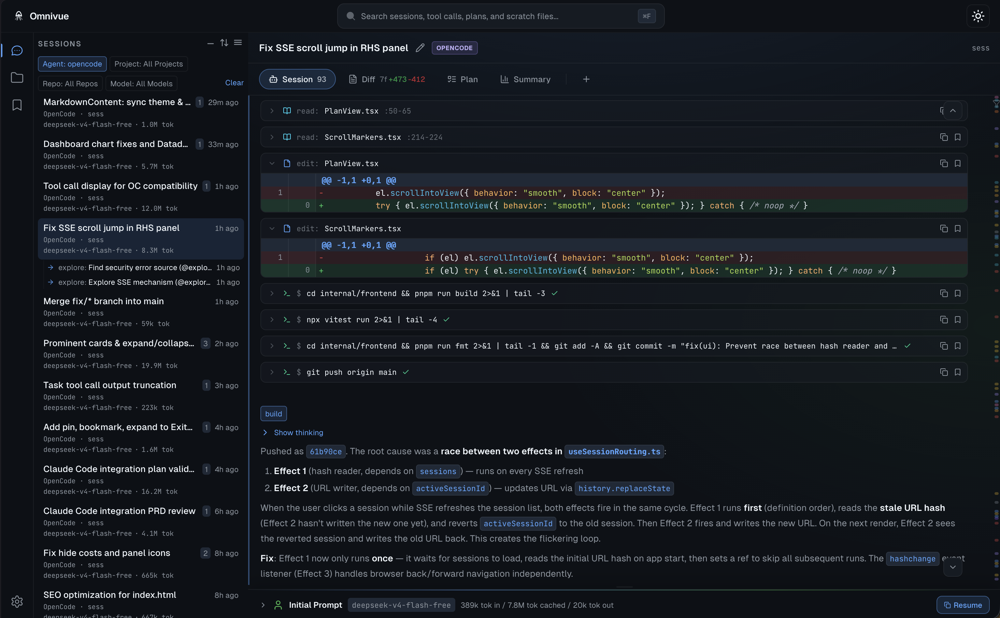
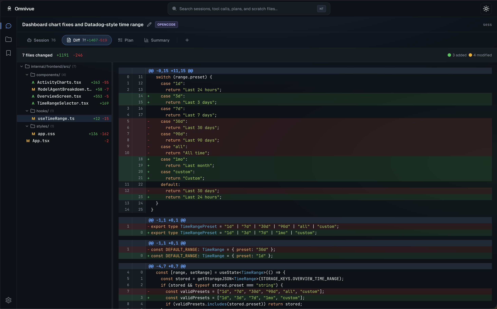
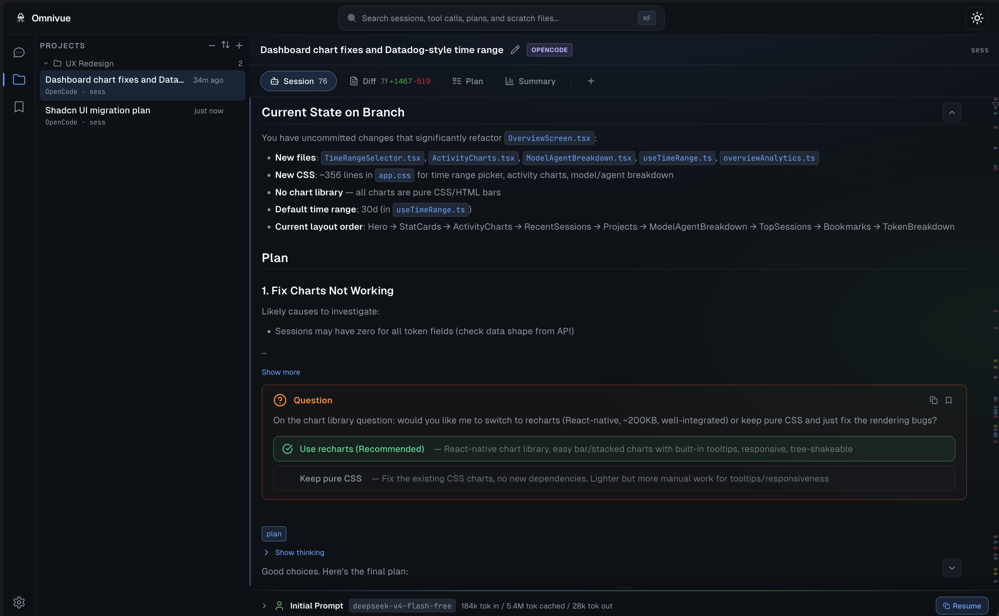

100% Local Multi-Agent Session Browser & Viewer
A multi-agent session browser and viewer for managing AI coding sessions from OpenCode, Copilot, Claude Code, Cursor, Pi, and Codex. Everything stays 100% local — nothing leaves your machine.
See all your AI agent sessions in a single session browser. Sessions are grouped by repository with color-coded agent badges for easy session management, and everything stays 100% local on your machine.

Full conversation history with alternating user/assistant messages, tool call outputs, and collapsible reasoning blocks. Normalized across all agents and rendered locally.

See exactly what files were created, modified, or deleted in each session. Expand any file to view the full unified diff with syntax-highlighted additions and deletions.
Full-text search across every message, tool call, plan, and diff. Scope to a single session or search all your agents at once, entirely on your machine.

Manage sessions across agents with virtual folders. Create a project-based session management system — OpenCode, Copilot, Cursor, Claude Code, Pi, and Codex sessions all live side by side in local storage.
Per-session rich text or code notes. WYSIWYG (TipTap) or Monaco editor. Auto-save, perfect for review notes and annotations.
One-click copy of the resume command. Deep-link any step with #/session/{id}/step/{n} for sharing.
Never writes to agent databases. All connections use ?mode=ro — verified at open time. Nothing leaves your developer machine.
Install, initialize, and start browsing locally in three commands.
$ curl -LO https://github.com/stevencrawford/omnivue/releases/latest/download/omnivue_$(uname -s)_$(uname -m).tar.gz
$ tar xzf omnivue_*.tar.gz && sudo mv omnivue /usr/local/bin/
$ omnivue init
omnivue: scanning for AI agent sessions...
omnivue: found 6 source(s):
[opencode] /Users/user/.local/share/opencode (14 sessions)
Add this source? [Y/n] Y
Added.
[copilot] /Users/user/.copilot (8 sessions)
Add this source? [Y/n] Y
Added.
[cursor] /Users/user/.cursor (12 sessions)
Add this source? [Y/n] Y
Added.
[pi] /Users/user/.pi/agent/sessions (5 sessions)
Add this source? [Y/n] Y
Added.
[claude-code] /Users/user/.claude (9 sessions)
Add this source? [Y/n] Y
Added.
[codex] /Users/user/.codex (3 sessions)
Add this source? [Y/n] Y
Added.
$ omnivue
omnivue: server started at http://localhost:6275 (pid 9876)Go backend with an embedded React SPA. Download one binary, run it, and go. No Node.js, no database servers, no runtime dependencies.